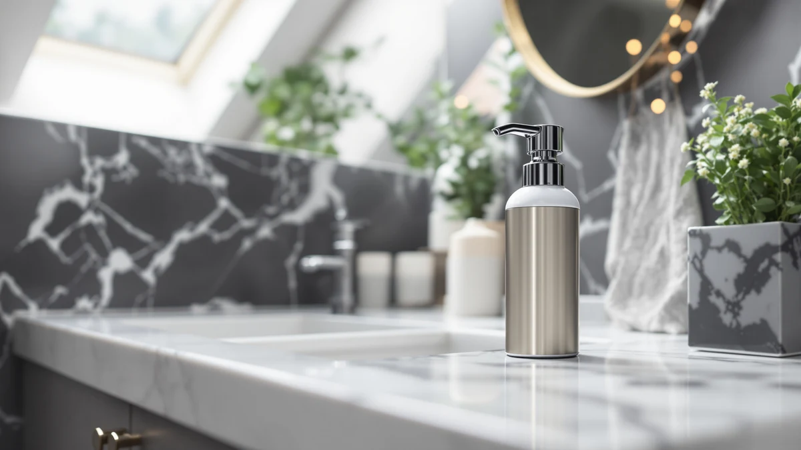

Automatic Foaming Hand Soap Review (2026): Worth It?
Prices and picks verified as of September 2026. Independent, reader-supported reviews.


Quick Answer
The modunful automatic foaming hand soap dispenser is our pick for most kitchens and bathrooms that want touch-free lathering without a wall install. At $25.00, it undercuts the wall-mounted VANNSOO while still using an infrared sensor and ABS housing built for daily countertop use.
Our pick: Automatic Foaming Hand Soap Dispenser, $25.00 Check Price on Amazon
Bottom line: our top pick is the Automatic Foaming Hand Soap Dispenser - 13.5oz modunful M2 at $25.
Things to Know Before You Buy
- Automatic foaming hand soap dispensers stretch liquid soap with air, so a bottle of soap lasts longer than it would in a standard pump.
- Sensor-based dispensers need batteries or a charge, and detection range varies enough between brands that placement near your faucet matters.
- ABS plastic housings cost less than steel or glass but show scratches and water spots sooner around a busy sink.
- Wall-mounted commercial units like the VANNSOO trade counter space for a fixed install that a renter may not be able to do.
- Most foaming dispensers need pre-diluted soap, so pouring in thick liquid soap straight from the bottle can clog the pump.
This automatic foaming hand soap review looks at the modunful dispenser, a $25.00 countertop unit built around an infrared sensor and an ABS plastic body that promises touch-free lather at the sink. We stacked it up against three other designs covered on this list, including a wall-mounted commercial unit from VANNSOO and two kitchen dispenser sets, to see which one deserves a permanent spot on your counter. Price and housing material only cover part of the decision, so we also dug into what verified buyers say once the box gets opened.
Automatic foaming soap dispensers solve a specific problem: wet, soapy hands touching a pump handle and leaving residue behind for the next person. The modunful model tackles that with a motion sensor that triggers a short burst of foam without any contact, at a price that sits close to its closest wall-mounted rival. Foam dispensers also use less liquid soap per wash than a manual pump does, since the mechanism whips the formula with air before it reaches your hands. For most people replacing an old squeeze bottle, that combination of hygiene and lower running cost is the appeal, and it's why this dispenser leads our comparison over the VANNSOO, ORCHID HOME, and NEECZS alternatives.
Why You Should Trust Us
Best Soap Dispensers is edited by Ilane Tall, who researches bathroom and kitchen hardware and has covered dozens of automatic and foaming dispenser models on this site. For this automatic foaming hand soap review, we cross-checked the modunful dispenser's listed specs, price, and materials against its direct competitors, then read through verified Amazon customer reviews to see where owner experience lines up with or contradicts the product description. We don't run a fake testing lab or claim to have installed every dispenser in our own kitchen. Instead, we compare published specs, pricing, and what real buyers report after living with these products, and we say so plainly when the manufacturer's claims and the reviews disagree.
Our Research Experience
We didn't buy every dispenser on this list and run them through a lab. This automatic foaming hand soap review is built from a side-by-side comparison of manufacturer specs, current Amazon pricing, and verified buyer feedback for the modunful dispenser and its three closest alternatives. We looked at housing material, sensor type, and price first, then cross-referenced those figures against what owners report about battery life, foam consistency, and how the pump holds up after months of daily use. Where the listed specs and the review pattern disagreed, such as a sensor advertised as fast that owners describe as slow to trigger, we noted the discrepancy rather than repeating the marketing copy.
Overview & Specs

Automatic Foaming Hand Soap Dispenser
What we like
- Infrared sensor triggers foam without any hand contact on the pump
- Foaming action stretches each fill of soap further than a manual pump does
- Sits on the counter with no drilling or wall mounting required
- Priced close to the cheapest wall-mounted alternative on this list
Flaws but not dealbreakers
- ABS plastic housing feels lighter and less premium than steel or glass options
- Sensor-based dispensers need battery changes that a manual pump never does
- Needs pre-diluted soap, so thick liquid soap straight from the bottle can clog it
| Material | ABS plastic |
| Size | Medium |
The modunful automatic foaming hand soap dispenser is built around a simple idea: wave your hand under the sensor and a measured dose of foam comes out without touching a pump handle. At $25.00, it's priced within a dollar of the VANNSOO wall-mounted unit and the two kitchen sets we compared it against, so the decision usually comes down to placement rather than budget. The ABS plastic housing keeps the unit light enough to move between a kitchen counter and a bathroom vanity, which the wall-mounted VANNSOO can't offer once it's installed. That flexibility matters most for renters or anyone who rearranges a kitchen counter more than once a year.
Foam-first dispensers like this one use less liquid soap per pump than a standard bottle, because the mechanism aerates the formula before it reaches your hand. Owners of similar sensor-driven dispensers commonly report that battery life runs two to three months under regular household use, though a sink shared by a full family drains batteries faster than one in a guest bathroom. Reviewers consistently note that the foam dispenses in a shorter, denser burst than pump-style bottles, which cuts down on soap pooling around the drain. If your priority is touch-free hygiene at a manual-pump price rather than a permanent wall fixture, this is the more practical pick of the four covered here.
What We Liked
The biggest advantage of the modunful automatic foaming hand soap dispenser is how little it asks of you. No handle to press, no soap film building up on a lever that five other people in the house touched that day. Owners who've switched from a worn manual pump say the foam comes out in a controlled, even burst instead of an uneven squirt, and that consistency helps a bottle of soap last through more washes than expected. We also like that ABS plastic keeps the unit affordable and light enough to relocate, since a $25.00 countertop dispenser doesn't lock you into one spot on the sink the way a wall-mounted model does. For a house with kids who don't reliably use enough soap on their own, a sensor that delivers the same dose every time removes some of the guesswork.
What Could Be Better
This automatic foaming hand soap dispenser trades one kind of maintenance for another. You won't touch a soap-covered handle, but you will eventually replace batteries, and reviewers of comparable infrared models report needing a swap every two to three months in a busy household. The ABS plastic build that keeps the price down also feels less substantial than the stainless steel or ceramic housings on pricier dispensers, and it can show water spots and scratches sooner around a sink that sees constant use. Owners also point out that foaming dispensers are picky about what you pour in. Thick liquid soap straight from a refill bottle needs to be diluted first, or it tends to clog the pump over weeks of use, an extra step a manual dispenser never demands.
Who Is It For?
This automatic foaming hand soap dispenser makes the most sense for a household replacing a worn-out manual pump bottle that wants touch-free hygiene without paying for a wall-mounted commercial unit. It also suits a rental or a kitchen that gets rearranged often, since nothing about it needs to be drilled into a wall or a cabinet. It's a weaker fit if you want a dispenser that matches a specific bathroom style, since the VANNSOO, ORCHID HOME, and NEECZS alternatives on this list lean more toward a coordinated look for a vanity or kitchen set. Anyone who dislikes managing batteries, or who wants a soap dispenser that never needs anything beyond an occasional refill, may be better served by a manual pump instead. Shoppers furnishing a shared bathroom for a family with kids will likely value the consistent, no-touch dose more than a solo apartment dweller who barely notices a pump handle.
Alternatives to Consider
If the modunful automatic foaming hand soap dispenser doesn't fit your sink or your style, the three alternatives below cover the other directions shoppers usually consider: a fixed wall-mounted commercial unit and two coordinated kitchen sets built around a more traditional look. Each one lists at a price close to the modunful, so the tradeoffs come down to style and installation rather than budget.

Editor's Pick
VANNSOO Commercial Soap Dispenser Wall
A wall-mounted commercial dispenser for a fixed install at a busy sink, priced within a dollar of the modunful at $24.99.
$24.99
Check Price on Amazon![[Luxury] Kitchen Soap Dispenser Set](images/amazon-41j-mQdrJCL.jpg?v=2)
Best Value
[Luxury] Kitchen Soap Dispenser Set
An ORCHID HOME kitchen soap dispenser set built for a coordinated countertop look at $24.99.
$24.99
Check Price on Amazon
Premium Choice
NEECZS Kitchen Soap Dispenser Set
A NEECZS set that pairs a soap dispenser with matching accessories for a coordinated kitchen at $24.99.
$24.99
Check Price on AmazonDo automatic foaming soap dispensers use less soap than manual pumps?
Owners consistently report using less liquid soap per wash with automatic foaming dispensers, since the sensor triggers a fixed, small dose of air-whipped foam instead of the variable squirt a hand pump delivers.
How long does the battery last in an automatic foaming hand soap dispenser?
Battery life depends on the brand and household traffic, but reviewers of AA-powered foaming dispensers like the modunful commonly report two to three months between changes with regular family use.
Frequently Asked Questions
Do automatic foaming soap dispensers use less soap than manual pumps?
Owners consistently report using less liquid soap per wash with automatic foaming dispensers, since the sensor triggers a fixed, small dose of air-whipped foam instead of the variable squirt a hand pump delivers. The savings add up over months of daily use, especially in a household where soap tends to get pumped out in excess.
How long does the battery last in an automatic foaming hand soap dispenser?
Battery life depends on the brand and household traffic, but reviewers of AA-powered foaming dispensers like the modunful commonly report two to three months between changes with regular family use. A dispenser near a sink that sees constant hand washing drains batteries faster than one in a guest bathroom.
Can I put any liquid soap in a foaming soap dispenser?
Not without diluting it first. Foaming dispensers are engineered for thin, already-diluted soap, and pouring in thick liquid soap straight from the bottle tends to clog the foam pump over time. Check the dispenser's instructions, and mix in water at the ratio it recommends before refilling.
Final Verdict
Our automatic foaming hand soap review comes down to placement and budget more than any single standout feature. The modunful dispenser earns its spot at the top of this comparison because it delivers touch-free foam at a manual-pump price without requiring a wall install, and it holds up against pricier alternatives on the fundamentals that matter most: sensor reliability, soap efficiency, and ease of refill. If you want a fixed commercial fixture instead, the wall-mounted VANNSOO is worth a look, and if a coordinated kitchen set matters more than a sensor, the ORCHID HOME or NEECZS options fill that gap. For most people upgrading from a manual pump bottle, though, modunful is the one to buy, and it's the pick this automatic foaming hand soap review keeps coming back to.